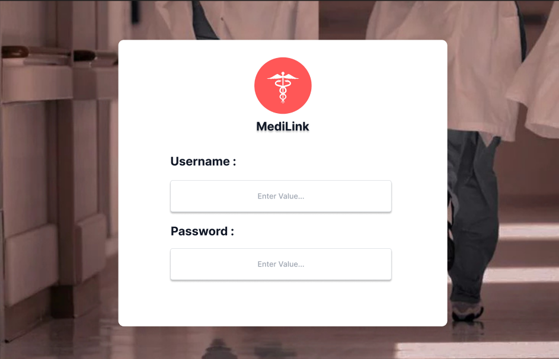
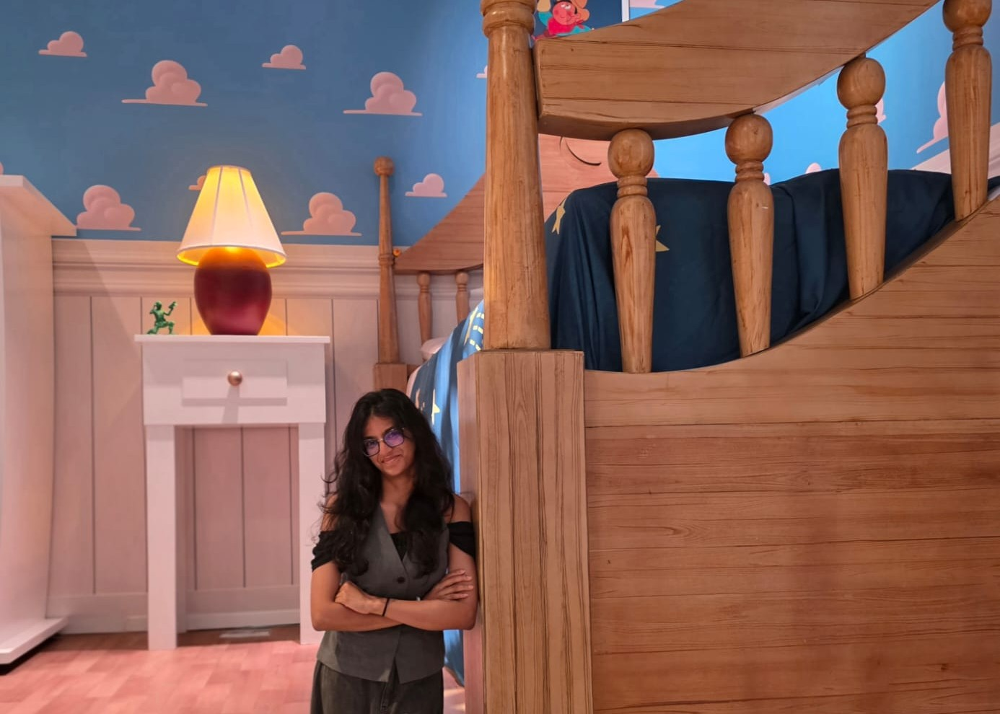
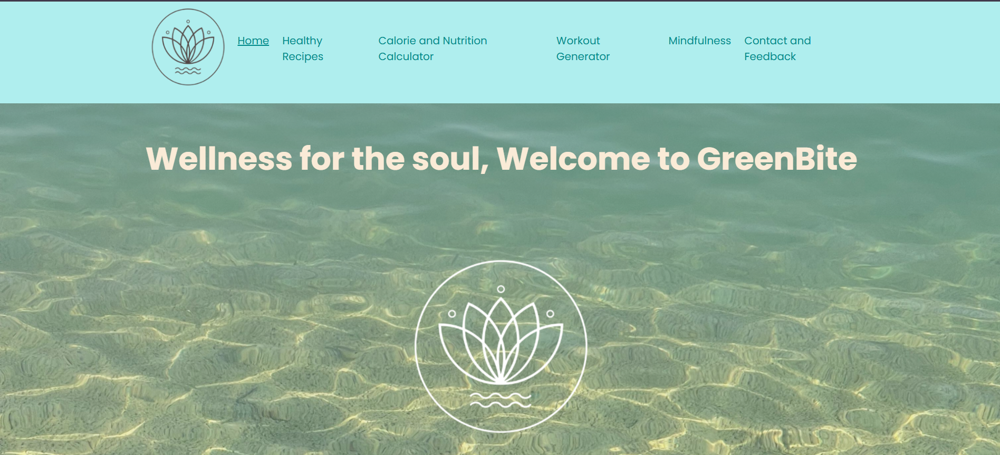
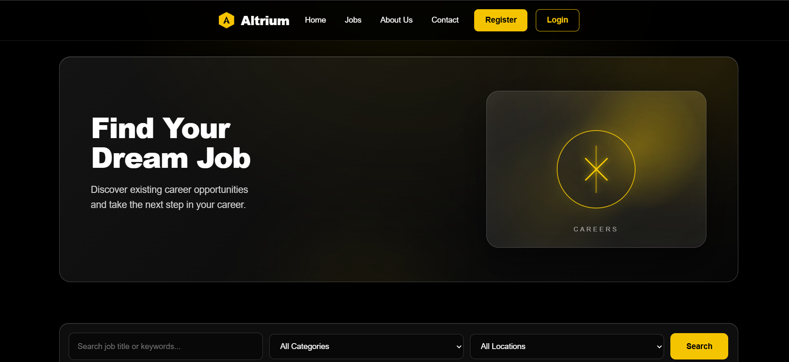
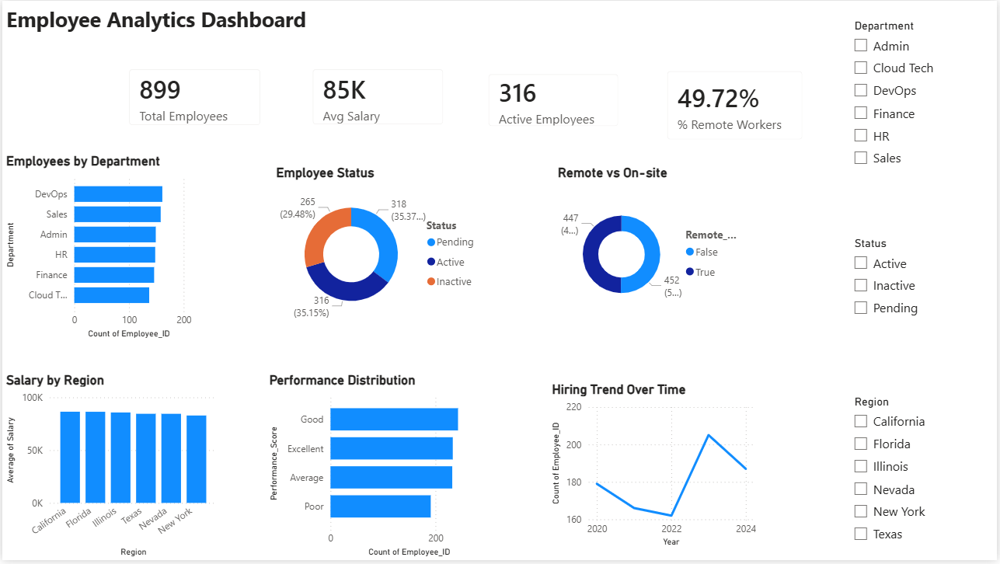
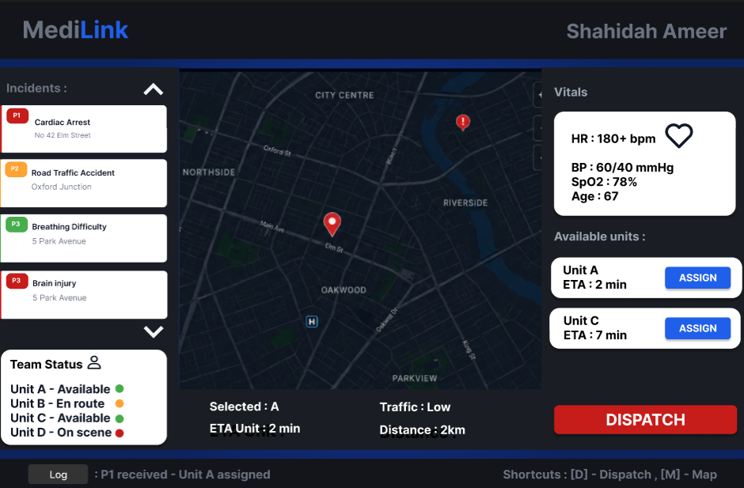
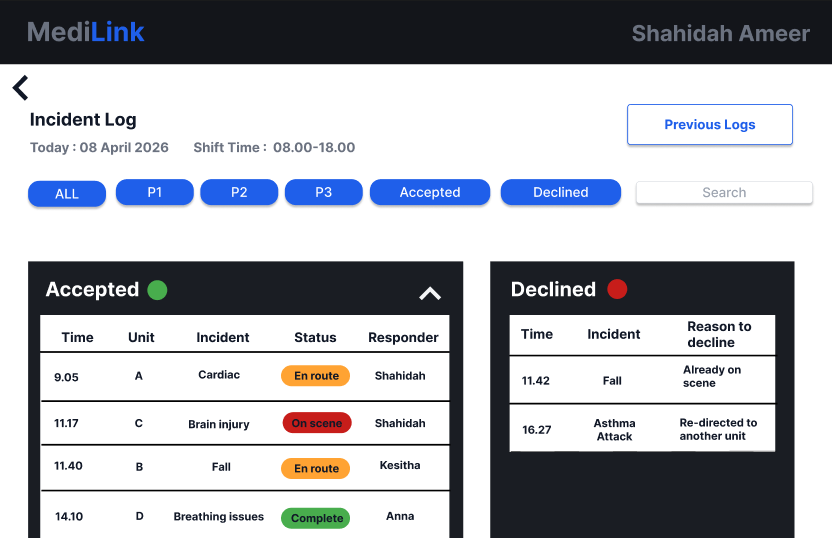
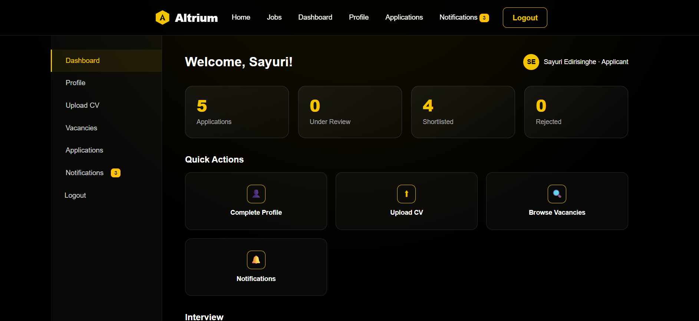
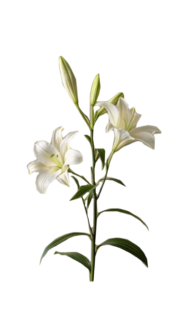

01MediLink
An emergency dispatch dashboard for coordinators and a smartwatch app for paramedics, built as a Figma design system and a clickable prototype, then refined through a heuristic evaluation.
Read case studyCOMPUTER SCIENCE UNDERGRADUATE DESIGN · CODE · WORDS
I'm Sayuri, a Computer Science undergraduate interested in the intersection of thoughtful design, technology, and meaningful storytelling.
Explore my work
A SELECTION OF MY WORK
From digital interfaces to technical experiments, here's what I've been learning, making, and exploring.

01An emergency dispatch dashboard for coordinators and a smartwatch app for paramedics, built as a Figma design system and a clickable prototype, then refined through a heuristic evaluation.
Read case study
02A six-page wellness website with recipes, a calorie calculator, a workout generator and a mindfulness page, built with HTML, CSS and JavaScript and tested for accessibility and performance.
Visit live site
03A job portal built with ASP.NET Core MVC and SQL Server, with role-based access for applicants, recruiters, admins and management. Built by a team; I handled the development and QA.
Read case study
04Cleaned a messy employee dataset with Power Query, modelled it as a star schema, and built an interactive dashboard with KPIs, charts and slicers.
Read project breakdownUI/UX DESIGN · CASE STUDY
MediLink is an emergency response platform designed for two very different devices: a desktop dashboard for dispatch coordinators, and a smartwatch app for paramedics on the ground. Building on earlier wireframes and personas, this stage had four goals: a reusable design system, a high-fidelity clickable prototype with conditional logic, a usability evaluation, and a developer handoff specification.
The design centred on two users: Shahidah, an experienced dispatcher handling several incidents at once, and Kesitha, a trainee who is still building familiarity with the system. Designing for both meant a full-density dashboard for experts and a simplified variant for the trainee.
Before designing any screen, I built a component library in Figma following Brad Frost's Atomic Design approach. Colours and text styles were saved as global styles, so one change updates the whole prototype.
The clickable prototype covers a complete path, from logging in to dispatching a unit, on both the desktop dashboard and the watch. A Figma variable drives a live counter of pending alerts that drops from 4 to 3 when a dispatcher acknowledges an incident, so the interface responds to what the user does.


I evaluated the prototype against Nielsen's ten usability heuristics and fixed three problems:
I prepared a redlined specification on its own Figma page, marking up spacing, typography and interaction rules on the most complex screen, so a developer wouldn't need to guess any values.
FULL-STACK · TEAM PROJECT
Altrium is a full-stack recruitment portal where applicants browse and apply for vacancies, and recruiters, admins and management each get their own tools. It was built by a team following an agile, sprint-based process, and I handled the development and quality assurance.

The portal uses ASP.NET Core MVC with Entity Framework Core and a SQL Server database, with Razor views for each page and one stylesheet for the look and feel. The database is created from migrations, so the project can be set up locally by following the README.
The submission covers the first sprint's scope. Some groundwork for the second sprint, including notifications, reports, admin and management dashboards and interview scheduling, is already in the schema and partly implemented.
DATA ANALYTICS · POWER BI
The starting point was a deliberately messy employee dataset of about 1,025 records. It had missing ages and salaries, "N/A" typed into a numeric column, negative phone numbers, heavily duplicated emails, salaries with floating-point errors, and department and region squashed into one column. Analysing it as it was would have produced faulty results.
The result was a clean set of 899 records.
I organised the cleaned data as a star schema: one fact table holding age, salary and join date, linked to six dimension tables for employee, department, region, status, remote work and performance score. This keeps the slicers and cross-filtering working across every visual.
The dashboard has four KPI cards (total employees, average salary, active employees and remote percentage), charts for department, status, remote versus on-site work, salary by region, performance and hiring over time, and slicers for department, status and region.
A few things stood out: DevOps and Sales are the largest departments, average salary is almost uniform across regions, the workforce splits close to evenly between remote and on-site, and hiring peaks around 2023.
Mean imputation keeps the overall distribution but reduces variability, and dropping the phone and email columns meant losing data. With a real source to check against, I'd recover those fields rather than remove them.
A growing collection. More projects and detailed case studies will be added as they develop.
NOTES, STORIES & IDEAS
A place for my articles, research, observations, and stories that deserve more than a passing thought.
NATURE · CULTURE · RESEARCH
Exploring the ecological and cultural connections between Sri Lanka's Sinharaja Forest Reserve and Japan's ancient forest landscapes.
FICTION · MYTH · NATURE
A short story imagining the guardian spirits of Sinharaja, Yakushima and Shirakami-Sanchi meeting once a century.
EVENTS · DESIGN · COMMUNITY
A reflection on the Catalyst Club workshop and its lessons on design fundamentals and learning through iteration.
OPINION · SOCIETY · POWER
A personal essay on what power is for, and why it belongs to a sage and an empath.
TRAVEL · KOREA · EXPERIENCE
A first-hand guide to Jeju's submarine dive, from the ride to the coral to what it costs.
NATURE · CULTURE · RESEARCH
As monsoon season rises, tiny raindrops fall from leaf to leaf in the forest of Sinharaja and miles away through the rising mists around the cedars and the moss covered trunks sits Yakushima and Shirakami-sanchi. While the landscapes could hardly look more different, from a tropical rainforest to cool mountainous forests, these woodlands share something deeper. The living records of Mother Earth's ancient natural world.
Perhaps that is why Shimai no Mori or "Sister Forests" feels like an appropriate name for them.
Sinharaja lies in the wet zone of south-western Sri Lanka and is the country's last extensive area of primary lowland rainforest. Its isolation has helped create extraordinary levels of endemism. More than 60 percent of its trees are endemic, while more than half of Sri Lanka's endemic mammal and butterfly species occur within the reserve. Almost all of the country's endemic bird species recorded there are found in Sinharaja as well.
Across the Asian continent, a similar story unfolded in Japan.
Yakushima, an island south of Kyushu, rises dramatically into mountains nearly 2,000 metres high. Its isolation and range of climates allow vegetation to change dramatically with altitude, from subtropical coastal plants to temperate rainforest and cold, highland vegetation. UNESCO describes the island as containing a remnant of ancient warm-temperate forest and some 1,900 species and subspecies of plants.
Further north lies Shirakami-Sanchi, a vast wilderness on Honshu famous for its remaining virgin Siebold's beech forests. These forests are remnants of a woodland ecosystem that has existed in northern Japan for thousands of years. Black bears, Japanese serow and dozens of bird species inhabit the area.
While these ecosystems have continuously changed and adapted, their isolation has allowed evolutionary histories to survive making them living pieces of prehistory. In that sense, they are biological islands: places where species have evolved, persisted and diversified within relatively protected environments.
The similarities become even more fascinating when we look at the creatures that inhabit these forests.
Sinharaja is home to the Sri Lankan leopard, alongside remarkable endemic species such as the purple-faced langur, Sri Lanka blue magpie and several endemic birds.
Japan has its own symbols of wild isolation. Yakushima is famous for its ancient sugi, or Japanese cedar, some of which have survived for extraordinary lengths of time. Its forests are so distinctive that they became one of Japan's first natural World Heritage sites.
Japan's rarest wild feline, however, belongs to a different island ecosystem. The Iriomote leopard cat survives only on Iriomote Island, part of the UNESCO-listed property that also includes Amami-Oshima, Tokunoshima and northern Okinawa. Its existence is another reminder of what geographical isolation can produce: a species found nowhere else on Earth.
Sri Lanka's leopard and Japan's island cats are not evolutionary equivalents. Their significance lies elsewhere. Each represents a larger truth: when a landscape remains sufficiently intact, extraordinary species can continue to occupy ecological niches that have disappeared elsewhere.
But ancient forests do not survive through isolation alone.
People have shaped their relationship with these landscapes for generations. Across Japan, forests have long carried cultural and spiritual significance, while communities surrounding forests such as Yakushima have developed deep relationships with their natural environment. In Sri Lanka, Sinharaja has likewise existed alongside local communities whose traditional use of forest resources has formed part of the landscape's history.
Protection, however, became increasingly important as commercial pressures and development threatened natural forests.
Sinharaja's history illustrates this transformation. The forest had already been declared a forest reserve in 1875. In 1978 it became a Biosphere Reserve, and in 1988 it was declared a National Heritage Wilderness Area before being inscribed as a UNESCO World Heritage site.
UNESCO recognition does not mean these forests are untouchable or completely free from danger. Sinharaja continues to face pressures including illegal timber felling, gem mining, poaching, cultivation and development around its boundaries. The same is true of the Japanese World Heritage forests. UNESCO status is not a magical shield; it is a commitment to protect ecosystems whose value extends far beyond national borders.
Sisterhood has never been about being the exact same thing, it has been about diversity but with a bond. These three forests share the bond of preserving time with their diverse climates, species and evolutionary histories. They remind us that forests are more than collections of trees and animals. They are records of evolution, climate and survival written into living organisms. Every ancient cedar, endemic bird, rare mammal and seemingly ordinary tree is part of a story that began long before modern borders, cities and roads existed.
Perhaps that is what makes the idea of Shimai no Mori so powerful. The forests of Sri Lanka and Japan do not need to be identical to belong to the same story.
They are sisters because they teach us the same lesson: protecting an ancient ecosystem is not simply about saving what exists today. It is about preserving the possibility that its evolutionary story can continue tomorrow.
In a rapidly changing world, these forests allow us to hear an echo of the wild that came before us and, if we protect them carefully enough, perhaps an echo of the wild that will outlive us.
FICTION · MYTH · NATURE
Midnight. It was time.
She rose from her slumber, the mighty mountain goddess of Shirakami-Sanchi. She had always watched over these mountains; this forest and her people. They knew her as Yamanokami and right now, it was time.
A small grunt, his gnarly roots that seemed to engulf him released, allowing him to rise. Yakusugi, the great cedar god was thousands of years old, yet his forest Yakushima was as fresh to him as the beginning of dawn. He grabbed his stick of cedar, a gift from his beloved trees and was ready to depart, it was time.
A great roar echoed through the forest of Sinharaja, yet no creature panicked. They were familiar with the call of their Lion King. He brushed his great mane and looked to the horizon as it was time.
Time for them to meet. To share the love of their forests and how they are so similar and yet so different to each other. This meeting only happened once a century; so it was always a treat when it finally rolled around. Indeed, it was time.
Where do they meet? It is neither here nor there. Not earth or sky. A space only great gods could gather. And here they were. They bowed to each other and gave each other greetings, in a language transcending the human tongue.
The great lion mentioned how the rain was cooling these days while the goddess and elder mentioned the snow that was covering their forests. They spoke of their beloved animals, the melodies of the birds and their beautiful forests. These conversations enriched them and time always passed way too fast when they met.
A sudden honk disturbed their conversation. It was one of those fancy human metal things on wheels. The year was 2026, they were not alien to these anymore so they remembered that the term for these was cars. The world had changed ever so vastly, humans have come far; both for better and worse. They wished they cared more for their beloved nature instead of being trapped inside their glass houses and moving screens. They too belonged to Earth and it never failed to baffle them how careless they are when it comes to their Great Mother. Humans will forever be, the most complex creature in nature and even great gods such as themselves cease to understand them.
Dawn broke over the Pacific and Indian Oceans, and again it was time; but it was to depart. They bowed and with the promise of another meeting in centuries time, the Elder returned to his strong roots, She back to her mountains and He back to his tropical paradise.
EVENTS · DESIGN · COMMUNITY
What makes a design stand out? Is it the colours, the typography, or the way every element comes together? These questions were explored at the Creative Design Workshop, an initiative by the Catalyst Club, led by its members Jahani Rathugamage and Mark Karunaratne. The workshop provided participants with an opportunity to discover how thoughtful design choices can transform a simple idea into an engaging visual creation.
The workshop provided participants with an introduction to the creative design process, combining essential graphic design principles with interactive and engaging activities to encourage them to experiment with new ideas and grow more confident in their creativity. The session started with the basics of creating an effective design, highlighting the importance of understanding the brief, identifying the target audience, and gathering references before embarking on any design project.
Another key point emphasized by Jahani and Mark was that design is generally not achieved on the first try, but is instead a process of constant experimentation, feedback, and improvement. By demonstrating how mistakes and modifications could be turned into learning experiences, they highlighted the importance of remaining flexible and open to different ideas and approaches.
The focus of the workshop then shifted towards the visual components that influence a design's appearance and communication. Typography, layout, colour and contrast, as well as spacing, were among the aspects discussed, helping participants understand how these elements complement one another to create well-balanced graphics.
Participants were also introduced to practical techniques they could incorporate into their everyday creative work, whether designing posters, promotional graphics, or other visual content. The emphasis was on understanding not only what makes a design attractive, but also what makes it effective.
In addition to design principles, the workshop introduced various software tools that could support the creative process. Canva was presented as an accessible starting point for those new to design, whereas Affinity and Adobe Photoshop were introduced as alternatives offering more opportunities to experiment with advanced techniques. However, the focus of the session remained on developing a sound understanding of design rather than becoming accustomed to a single software platform.
One of the highlights of the workshop was the hands-on poster-design activity, which allowed participants to put their newly acquired knowledge into practice. By experimenting with typography, colours, layouts, and spacing, they translated the concepts discussed during the session into their own creative work.
Participants then presented their completed posters, showcasing their creativity and individual approaches. This demonstrated the value of combining practical guidance with personal experimentation. Another important lesson from the activity was that, despite being guided by the same principles and concepts, each designer brings a unique perspective to their work.
The experience also offered valuable lessons for Jahani and Mark. They recognized the importance of striking a balance between theory and practical activities, ensuring that participants had enough time to understand and apply new ideas independently. The questions and discussions throughout the workshop also proved to be valuable learning opportunities, encouraging interaction and allowing participants to gain a deeper understanding of the concepts being taught.
The feedback received from participants was encouraging, with many expressing increased confidence in their design skills and an interest in continuing to practice and improve.
Ultimately, the Creative Design Workshop demonstrated that graphic design is not merely about making something beautiful. It involves having a purpose, communicating ideas effectively, and remaining open to improving and refining those ideas. By combining essential design principles with hands-on experimentation, Jahani Rathugamage and Mark Karunaratne created a meaningful and engaging learning experience for the participants.
One important lesson the workshop left its participants with was that there is no such thing as a perfect first attempt at design; there should always be room for creativity, growth, and improvement.
OPINION · SOCIETY · POWER
When you look at the world we live in right now, what do you see? A Utopia? A hell upon Earth? Or maybe, a mix of both? The world is run by people. However, people in power have an ability to tip the scales of this process.
To these people, what is power?
Money.
Mansions, cars, jets, luxury items.....I get it. In the words of Madonna, we are living in a material world.
Is it wrong to want to possess these? In my eyes, no. But should it be the main purpose of power? Absolutely not.
Or maybe it is Power itself. Being the boss, the one in charge, the one who makes the calls. Ah! I believe there is a word for that as well. Pride.
But tell me, what good is it being in charge and possessing power if one chooses to wield it like a fool?
Then what you may ask should be the core purpose of power? The power to change.
Change what? The history books from repeating themselves.
We know war, we have read of it and some of us have lived through it. A world once filled with smoke, ruin and the pain and suffering of the people.
The world not divided by skin and race. People of color who were once colonized, humiliated and enslaved. Forced to stay in separate lines to get the day's bread. Do we all not have the same hunger?
To save and protect Mother Gaia and her oceans. We live through her, we live in her; will it not be wise, if so to protect her?
A world that is not divided by race, religion, sexuality and gender. Because last I checked, we are all so iridescently human.
Why, being aware of these things do certain world leaders try to take pages out of that history? Why? Because more often than not, power goes to the hands of jesters.
Then who should power go to?
Power should belong to a Sage and an Empath.
Oh so a Sage or an Empath? Got it.
No. A Sage AND an Empath.
For there is no point in wisdom without empathy, and there is no point in empathy without wisdom.
A ruler who knows the history of their people and the hearts of their people.
Someone who will not let the Sun, a witness to the pain and crimes of the past, see that in a new day.
Someone who doesn't declare war because their ego took a hit or to show that they have got the bigger guns.
Someone who is human, speaks human and understands human.
Power, should be in the hands of a Sage and an Empath.
TRAVEL · KOREA · EXPERIENCE
The island of Jeju, once considered a place of banishment and exile during the Goryeo and Joseon dynasties, is now well known as a tropical ocean paradise in South Korea.
It is home to many tourist attractions such as Seongsan Ilchulbong, Mount Hallasan, Hamdeok Beach and much more.
One of the most beloved activities that take place here is the submarine dive, where tourists can submerge into the crystal-blue waters of Jeju near Munseom Island to explore the local marine life.
The Seogwipo submarine in Jeju has been operating since 1988, making it the first of its kind in Asia and the third in the world.
A short ferry ride takes its passengers to the submarine pontoon, where it then descends to the depths of up to 40m for Jeju's coral to showcase their vibrant shades, an artificial shipwreck to bring out your inner pirate and to see the bustling metropolitan of the underwater world.
Passengers will be viewing these wonders through the submarine's large portholes, accompanied by a friendly professional diver swimming outside scattering food; a small nudge for the fish to come and say hi.
This underwater experience lasts 40 minutes with audio guidance. After the tour, passengers are rewarded with a complimentary photo, as well as a framed one that can be purchased for a price of 3000 KRW.
The tour itself costs roughly 65,000 KRW for adults and 44,000 KRW for children. Booking can be done with the official Seogwipo Submarine Website, any international travel platform or on-site at the ticket office.
As someone who has been here as well, I can guarantee you this experience will leave you breathless and feeling one with Jeju and the beauty of its culture.

A LITTLE ABOUT ME
I'm a Computer Science undergraduate with a creative side and a curiosity about how people experience technology.
I'm especially interested in UI/UX design: understanding a problem, thinking about the people behind it, and shaping an idea into a thoughtful digital experience that is also soulful.
Outside of interfaces and code, I enjoy writing, reading and exploring ideas through articles and research. This portfolio brings those interests together in one place.
I designed this portfolio using the blueprint of me. My name, Sayuri, connects two meanings that feel close to my identity: the ocean, which reflects my roots in Sri Lanka, and the little lily, inspired by its Japanese origins. The splashes of purple represent my birthstone, the amethyst and it also happens to be my favorite color. Therefore, behind every color and illustration there is meaning. Together, they tell a story of who I am — academically, personally, and poetically.
Get to know meMY CREATIVE TOOLKIT
UI/UX · Wireframing · Prototyping · Design systems · Usability evaluation
HTML · CSS · JavaScript · C# · ASP.NET Core · SQL Server · Arduino / C++ · Git & GitHub
Power BI · Power Query · Data cleaning · QA & accessibility testing
Figma · Canva · Affinity · Article writing · Research · Storytelling